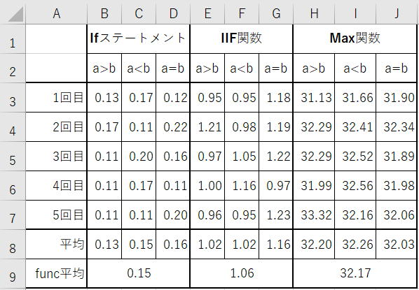

IfステートメントとIIF関数とMax関数の速度比較

マクロVBAの実行速度比較はとても良く読まれている人気記事となっていますが、
そのほとんどは配列やDictionaryを使った少し高度なVBAでの比較が多くなっています。
Ifステートメント、VBA関数のIIF関数、シート関数のMax関数
これらの処理速度を比較検証してみます。
しかし実際にどれくらいの速度差があるかは良くわからないものです。
このような基本的かつ処理時間の短い処理の速度は気にしない事が多いと思います。
そこで、改めて実測し確認しておこうというという事です。
IfとIIFとMaxの比較マクロVBAコード
Option Explicit
Sub TestRun()
Dim i As Long
Dim ary(1 To 5, 1 To 9) As Double
For i = 1 To 5
'a>b
DoEvents
ary(i, 1) = func_if(1, 2)
DoEvents
ary(i, 4) = func_iif(1, 2)
DoEvents
ary(i, 7) = func_max(1, 2)
'a<b
DoEvents
ary(i, 2) = func_if(2, 1)
DoEvents
ary(i, 5) = func_iif(2, 1)
DoEvents
ary(i, 8) = func_max(2, 1)
'a=b
DoEvents
ary(i, 3) = func_if(1, 1)
DoEvents
ary(i, 6) = func_iif(1, 1)
DoEvents
ary(i, 9) = func_max(1, 1)
Next
Range("B3:J7") = ary
MsgBox "完了"
End Sub
Function func_if(ByVal a As Long, ByVal b As Long) As Double
Dim c As Long
Dim i As Long
Dim t As Double
t = Timer
For i = 1 To 10000000
If a > b Then
c = a
Else
c = b
End If
Next
func_if = Timer - t
End Function
Function func_iif(ByVal a As Long, ByVal b As Long) As Double
Dim c As Long
Dim i As Long
Dim t As Double
t = Timer
For i = 1 To 10000000
c = IIf(a > b, a, b)
Next
func_iif = Timer - t
End Function
Function func_max(ByVal a As Long, ByVal b As Long) As Double
Dim c As Long
Dim i As Long
Dim t As Double
t = Timer
For i = 1 To 10000000
c = WorksheetFunction.Max(a, b)
Next
func_max = Timer - t
End Function
マクロVBAコードの解説は必要ないと思います。
1,000万回の実行となっています。
PCで各種実行中のサービス等頭の影響を考えて、5回実行しています。
最初は1億回くらいでやろうとしたら、さすがに時間がかかかりすぎてしまいました（笑）。
IfとIIFとMaxの実行速度の実測値
| Ifステートメント | IIF関数 | Max関数 | |||||||
| a>b | a<b | a=b | a>b | a<b | a=b | a>b | a<b | a=b | |
| 1回目 | 0.13 | 0.17 | 0.12 | 0.95 | 0.95 | 1.18 | 31.13 | 31.66 | 31.90 |
| 2回目 | 0.17 | 0.11 | 0.22 | 1.21 | 0.98 | 1.19 | 32.29 | 32.41 | 32.34 |
| 3回目 | 0.11 | 0.20 | 0.16 | 0.97 | 1.05 | 1.22 | 32.29 | 32.52 | 31.89 |
| 4回目 | 0.11 | 0.17 | 0.11 | 1.00 | 1.16 | 0.97 | 31.99 | 32.56 | 31.98 |
| 5回目 | 0.11 | 0.11 | 0.20 | 0.96 | 0.95 | 1.23 | 33.32 | 32.16 | 32.06 |
| 平均 | 0.13 | 0.15 | 0.16 | 1.02 | 1.02 | 1.16 | 32.20 | 32.26 | 32.03 |
| 全平均 | 0.15 | 1.06 | 32.17 | ||||||
筆者としては、意外にIIF関数が速いという印象でした。
単純な処理の割には実測値にかなりバラツキが出ていますが10%程度は誤差としてとらえてください。
さすがにこれが遅いのは仕方ないところです。
ただし遅いと言っても1,000万回での話です。
数万回程度では体感速度が変わることは無いでしょう。
10万行程度のデータで1行につき複数回の比較が必要な場合は、やはり遅くなってしまうので使用は避け他方が良いでしょう。
WorksheetFunctionをWithに指定したりオブジェクト変数にSetして使う事で、若干は早くすることができますが、
上記と同じ処理では25秒くらいまでしか速くなりません。
変数aに既に値が入っていて、変数bと比較して大きい方を変数aに入れるという処理の場合であれば、
Ifステートメントでは、a>bの場合は代入を実行しなくて良いので、さらに平均時間の差は開きます。
最後に
いかにも長く無駄な感じを受けてしまうかもしれませんが、しかしこれは必要な記述です。
1行で記述する書き方として、
If a > b Then c = a Else c = b
このような記述もできますが、あまりお勧めしません。
デバッグもいずらいですし、何より保守性が悪くなってしまいます。
しかし、
単なる大小比較でさえ色々な書き方があるという事は覚えておいた方が良いでしょう。
今回の検証では処理速度としてかなり差が出ましたが、
大量に繰り返す必要が無く速度を気にする必要がない場合も多いものです。
IIF関数やMax関数はVBAコードがすっきりして読みやすくなる効果があります。
同じテーマ「マクロVBA技術解説」の記事
エクセルVBAのパフォーマンス・処理速度に関するレポート
VBAのFindメソッドの使い方には注意が必要です
マクロVBAの高速化・速度対策の具体的手順と検証
動的2次元配列の次元を入れ替えてシートへ出力（Transpose）
大量データで処理時間がかかる関数の対処方法（SumIf）
大量データにおける処理方法の速度王決定戦
遅い文字列結合を最速処理する方法について
大量VlookupをVBAで高速に処理する方法について
Withステートメントの実行速度と注意点
IfステートメントとIIF関数とMax関数の速度比較
スピルって速いの?スピルの速度について
新着記事NEW ・・・新着記事一覧を見る
VBA100本ノック 100本目：WEBから100本ノックのリストを取得｜VBA練習問題（3月3日）
VBA100本ノック 99本目：自動席替え（行列と前後左右が全て違うように）｜VBA練習問題（3月2日）
VBA100本ノック 98本目：席替えルールが守られているか確認｜VBA練習問題（3月1日）
VBA100本ノック 97本目：Accessデータを取得（グループ集計）｜VBA練習問題（2月27日）
VBA100本ノック 96本目：Accessデータを取得（マスタ結合&抽出）｜VBA練習問題（2月26日）
VBA100本ノック 95本目：図形のテキストを検索するフォーム作成｜VBA練習問題（2月24日）
VBA100本ノック 94本目：表範囲からHTMLのtableタグを作成｜VBA練習問題（2月23日）
VBA100本ノック 93本目：複数ブックを連結して再分割｜VBA練習問題（2月22日）
VBA100本ノック 92本目：セルの色を16進で返す関数｜VBA練習問題（2月20日）
VBA100本ノック 91本目：時間計算（残業時間の月間合計）｜VBA練習問題（2月19日）
アクセスランキング ・・・ ランキング一覧を見る
1.最終行の取得（End,Rows.Count）｜VBA入門
2.RangeとCellsの使い方｜VBA入門
3.変数宣言のDimとデータ型｜VBA入門
4.マクロって何？VBAって何？｜VBA入門
5.Range以外の指定方法（Cells,Rows,Columns）｜VBA入門
6.セルのコピー&値の貼り付け（PasteSpecial）｜VBA入門
7.繰り返し処理（For Next)｜VBA入門
8.セルに文字を入れるとは（Range,Value）｜VBA入門
9.マクロはどこに書くの（VBEの起動）｜VBA入門
10.とにかく書いてみよう（Sub,End Sub）｜VBA入門
- ホーム
- マクロVBA応用編
- マクロVBA技術解説
- IfステートメントとIIF関数とMax関数の速度比較
このサイトがお役に立ちましたら「シェア」「Bookmark」をお願いいたします。
記述には細心の注意をしたつもりですが、
間違いやご指摘がありましたら、「お問い合わせ」からお知らせいただけると幸いです。
掲載のVBAコードは動作を保証するものではなく、あくまでVBA学習のサンプルとして掲載しています。
掲載のVBAコードは自己責任でご使用ください。万一データ破損等の損害が発生しても責任は負いません。